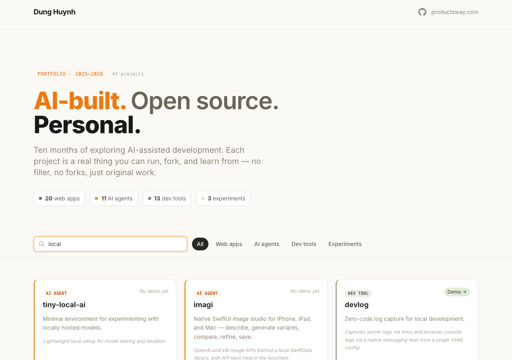
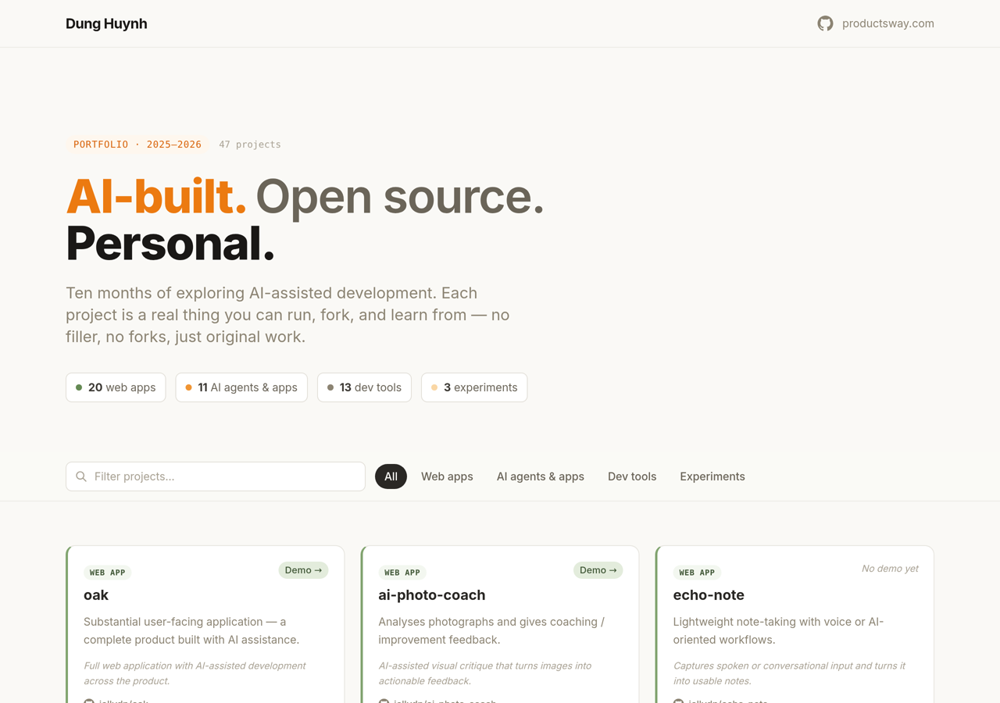
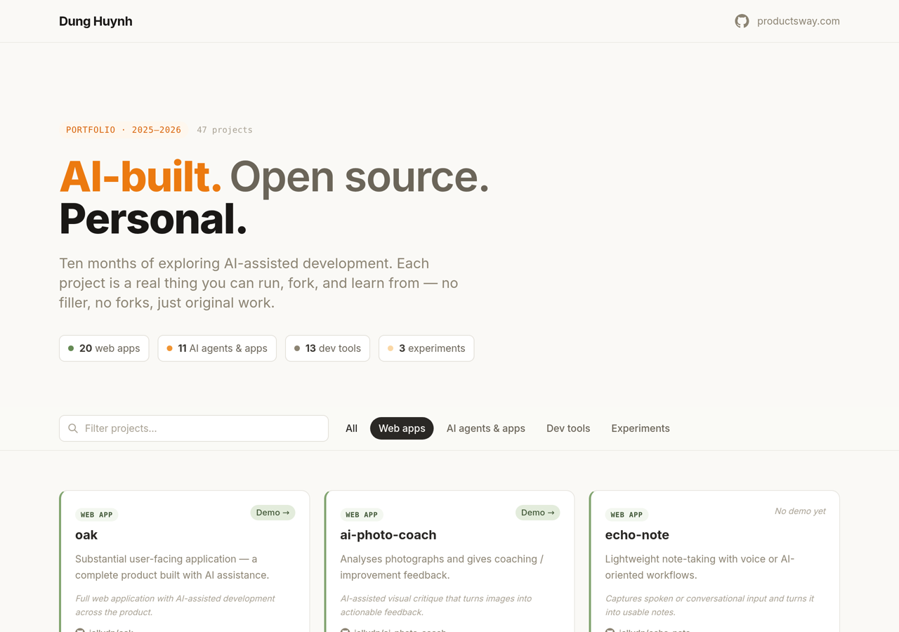
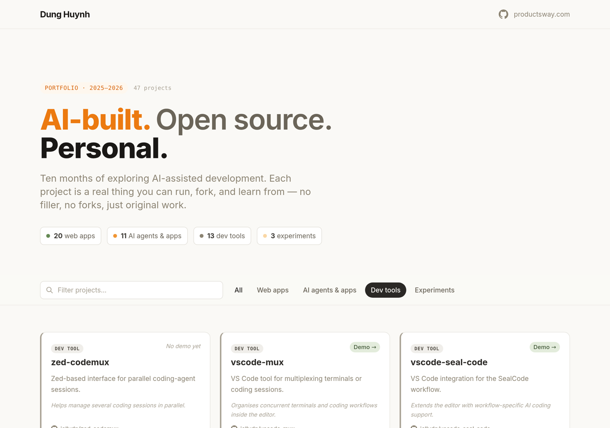
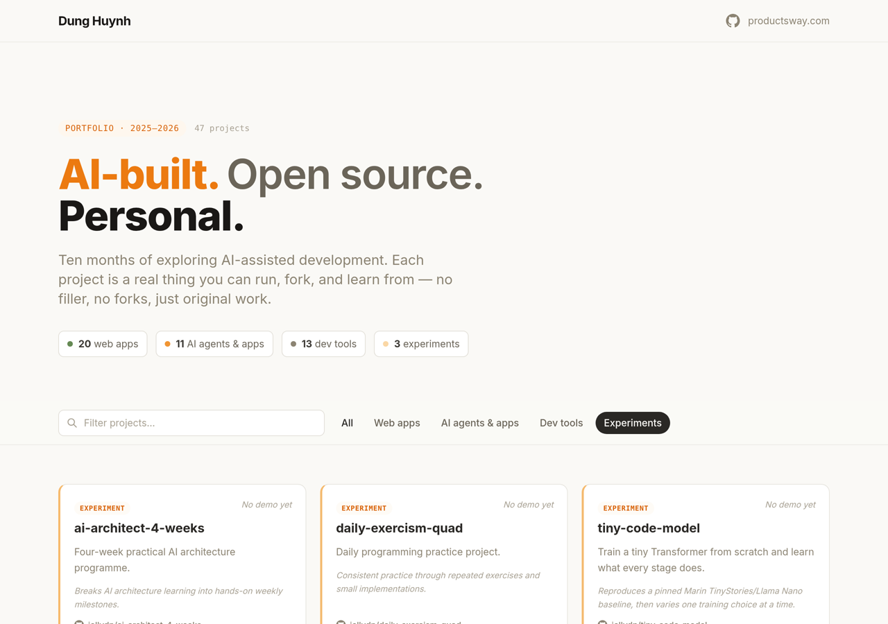

Every project, searchable and filterable.
The tracker is built to get you from "I wonder what's out there" to "I'm reading the code" in a couple of clicks.
Live search across all 53 projects
Type once, filter everything. The search runs against names, descriptions, and approaches — so it understands intent, not just titles.
Searching local surfaces tiny-local-ai, the minimal environment for experimenting with locally hosted models. Searching agent finds every agent project in the collection. No reloads, no results page — the grid updates as you type.
- Instant, zero-config fuzzy search
- Searches name, description, and approach
- Composes with category filters

Four categories, one click each
Every project lives in exactly one of four buckets — so "show me the AI agents" is a single click, not a puzzle.
The collection is balanced across the ways people actually explore AI: user-facing apps you can try today, agents that do work for you, developer tools that make your editor smarter, and learning projects that show their work.
- 17 web apps — real, usable products
- 15 AI agents — agents, providers & launchers
- 17 dev tools — editors, CLIs & plugins
- 4 experiments — learning in the open

Real demos, straight to GitHub
11 projects ship with a live demo — click "Demo" to try the app right now. Every single card links to its repository.
From the tiny-pomodoro PWA, to the streaming-chat-demo, to prompt-bench — the demo badge means it's not just a screenshot, it's something you can open in a tab.
- 11 live demos across the collection
- Every card links to its public repo
- New projects land here as exploration continues

What's inside all 53 projects
Every category, what it's for, and the highlights worth clicking first.
17
— usable products you can try todayReal user-facing applications built during the exploration: a macOS focus companion, a voice-first note app, an AI photo coach, a resume matcher, a RAG-powered blog engine, and more.

15
— agents, providers, launchers & memoryThe heart of the exploration: a minimal coding agent, a self-hosted agent hub, an autonomous coding loop, provider plugins for pi and opencode, a memory plugin for Claude Code, and tools that route free models to your favourite coding assistants.
17
— editors, CLIs, TUI & pluginsTooling that makes development itself smarter: terminal multiplexing for coding agents, a log copilot for support, .env management in the terminal, Neovim plugins that hide your secrets, and provider bridges that open up new models in your editor.

4
— learning in the openThe projects that show their work: a four-week AI architecture sprint, a production-RAG learning guide, a challenge-based playground, and daily multi-language practice.
